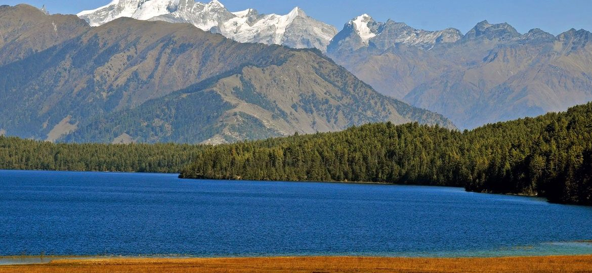

TOURIST SPOTS
Popular Tourism Spots:

Annapurna Mountain Range
One of Nepal's famed mountain ranges, the Annapurna consists of several peaks of varying heights. Of these, Annapurna I and Annapurna II are the tallest at almost 8000 meters providing a spectacular panoramic view for anyone visiting the Himalayas.
To Learn More Click HERE
Mount Everest

Mount Everest, known in Nepali as Sagarmatha (सगरमाथा) and in Tibetan as Chomolungma (ཇོ་མོ་གླང་མ), is Earth's highest mountain above sea level, located in the Mahalangur Himal sub-range of the Himalayas. The international border between Nepal (Province No. 1) and China (Tibet Autonomous Region) runs across its summit point.
To Learn More Click HERE
Khaptad National Park

The Khaptad National Park is a protected area in the Far-Western Region, Nepal that was established in 1984. Stretching over the four districts of Bajhang, Bajura, Achham and Doti it covers an area of 225 km2 (87 sq mi) and ranges in elevation from 1,400 m (4,600 ft) to 3,300 m (10,800 ft).
To Learn More Click HERE
Chitwan National Park

Chitwan National Park (Nepali: चितवन राष्ट्रिय निकुञ्ज) is the first national park in Nepal. It was established in 1973 and granted the status of a World Heritage Site in 1984. It covers an area of 932 km2 (360 sq mi) and is located in the subtropical Inner Terai lowlands of south-central Nepal in the districts of Nawalparasi, Parsa, Chitwan and Makwanpur. In altitude it ranges from about 100 m (330 ft) in the river valleys to 815 m (2,674 ft) in the Churia Hills.
To Learn More Click HERE
Chandragiri Hills

Chandragiri Hills Ltd is a Hospitality Company which operates cable car, restaurants & bar,conference center and branded shops in Thankot Kathmandu,with its upcoming attraction being amusement park, boutique resort, paragliding,, zip flying and many more.
To Learn More Click HERE
Rara Lake

The Rara Lake (Nepali: रारा ताल) is the biggest and deepest fresh water lake in the Nepal Himalayas. It is the main feature of Rara National Park, located in Jumla and Mugu Districts. In September 2007, the lake was declared a Ramsar site, covering 1,583 ha (6.11 sq mi) including the surrounding wetland.
To Learn More Click HERE
Bardia National Park

The Bardiya National Park (Nepali: बर्दिया राष्ट्रिय निकुञ्ज), also spelled Bardia, is a protected area in Nepal that was established in 1988 as Royal Bardia National Park. Covering an area of 968 km2 (374 sq mi) it is the largest and most undisturbed national park in Nepal's Terai, adjoining the eastern bank of the Karnali River and bisected by the Babai River in the Bardiya District. Its northern limits are demarcated by the crest of the Siwalik Hills. The Nepalgunj-Surkhet highway partly forms the southern boundary, but seriously disrupts the protected area. Natural boundaries to human settlements are formed in the west by the Geruwa, a branch of the Karnali River, and in the southeast by the Babai River.
To Learn More Click HERE
Mustang Region

Mustang District (Nepali: मुस्ताङ जिल्ला), a part of Gandaki Pradesh in of northern Nepal, is one of the seventy-seven districts of Nepal. The district, with Jomsom as its headquarters, covers an area of 3,573 km² and has a population (2011) of 13,452. The district straddles the Himalayas and extends northward onto the Tibetan plateau. Mustang is one of the remotest areas in Nepal and is second in terms of the sparsity of population
To Learn More Click HERE